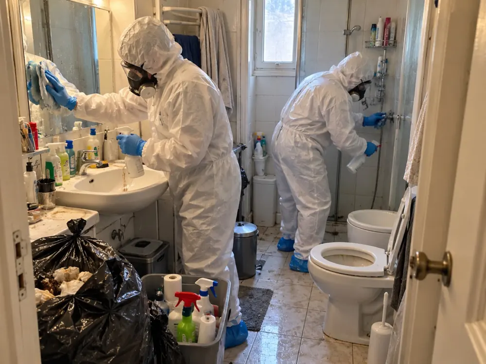
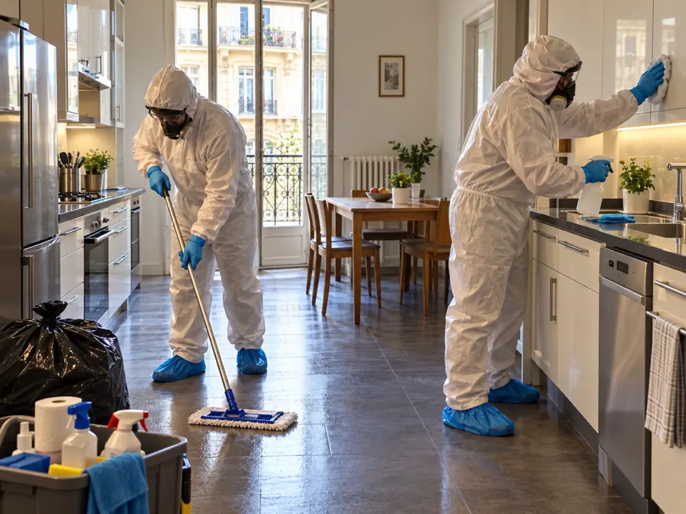
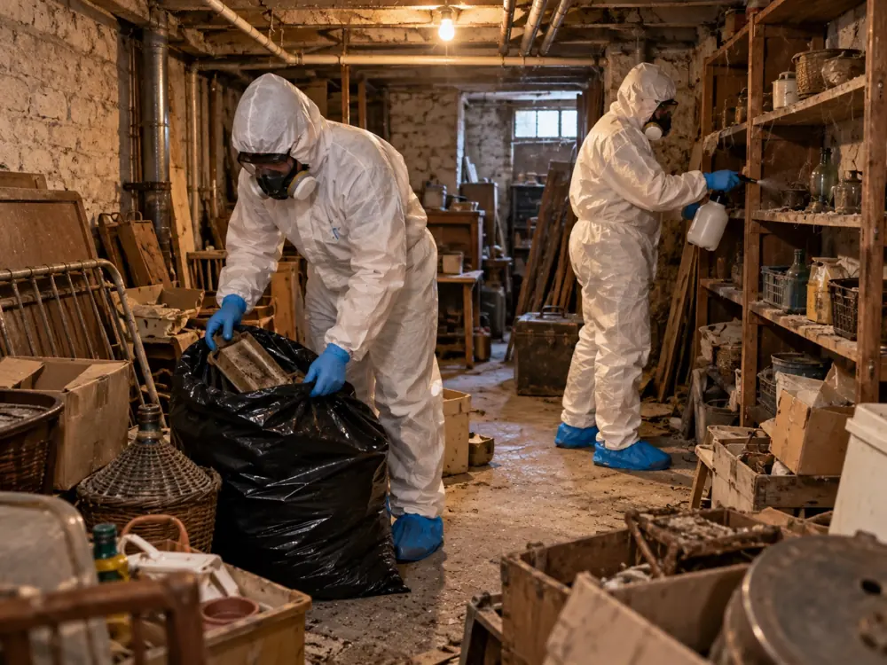
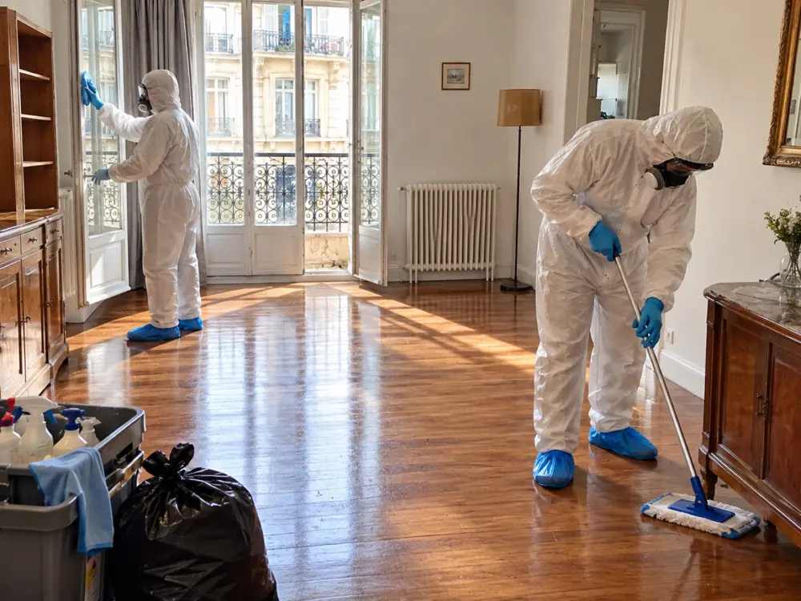
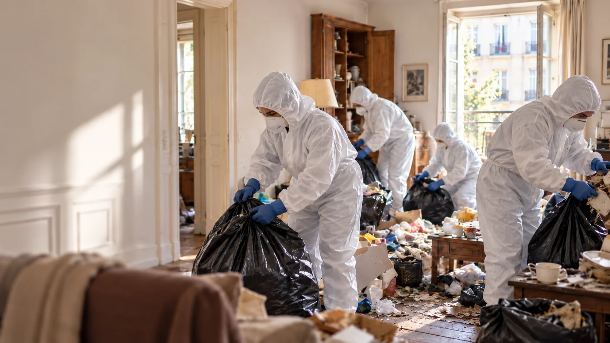

Nettoyage de logement insalubre à Paris 12e (75012)
Remettre en état de propreté un logement du 12e arrondissement que les fuites, l’abandon ou l’encombrement ont rendu malsain.
Un parquet gondolé, des sacs empilés près de la porte, une pièce où l’on n’entre plus : les signes sont nombreux, mais on tarde à les prendre au sérieux. Nous venons dans le 12e arrondissement, examinons chaque pièce, séparons ce qui se règle par un nettoyage de ce qui réclame un artisan, puis nous établissons pour vous un devis écrit gratuit.
Conformément au devis : retrait des ordures, protection des affaires de l’occupant, lavage minutieux, désinfection et traitement des foyers d’odeur, avec une grande discrétion.
gratuitvisite et chiffrage
De la gare de Lyon à Bercy et Nation : un arrondissement résidentiel où certains logements s’oublient
Le 12e arrondissement s’étend sur environ 638 hectares hors bois de Vincennes (1 632 avec le bois) et compte quatre quartiers : Bel-Air, Picpus, Bercy et Quinze-Vingts. Il comptait 143 128 habitants en 2009.
Plutôt résidentiel, marqué par l’artisanat du meuble du faubourg Saint-Antoine, il offre un parc de logements très varié : petits immeubles anciens, ensembles plus récents, résidences à Bercy. Quel que soit le bâtiment, un logement mal entretenu finit par se voir : odeur sur le palier, tache au plafond du voisin du dessous.
Dès que la situation dépasse le simple ménage, nous prenons en charge l’évacuation, le lavage, la désinfection et le traitement des odeurs. La visite et le devis écrit sont gratuits.
- Une visite sur place, puis un devis rédigé avant tout démarrage
- Documents, espèces, bijoux et photographies mis de côté avant le vidage
- Lavage, désinfection et traitement des odeurs, selon le devis
- Intervenants équipés, camionnette sans inscription

Entre le désordre et l’insalubrité, des paliers à distinguer
Nommer correctement la situation permet de choisir les bons moyens, sans dramatiser ni minimiser.
Sale
Poussière, graisse, vaisselle accumulée. Un nettoyage consciencieux suffit, sans équipement particulier.
Très sale ou encombré
Sacs partout, cuisine hors service, odeur dans l’air. Il faut commencer par évacuer, puis frotter en profondeur.
Insalubre
L’état du lieu menace la santé de ceux qui y résident ou y passent : humidité qui perdure, moisissures étendues, déchets en décomposition, nuisibles, air confiné.
Un point de méthode : qualifier un logement d’insalubre appartient aux autorités sanitaires (agence régionale de santé, service communal d’hygiène et de santé), après examen. Ce n’est pas le rôle d’une société de nettoyage. Nous ramenons le logement à un niveau de propreté et d’hygiène satisfaisant. Pour une reconnaissance officielle, il faut la faire valider auprès de ces services.
Eau qui s’infiltre, air qui stagne, déchets, parasites : comment tout se noue
Un seul facteur suffit rarement. Les difficultés s’accumulent et se renforcent.
Un siphon qui goutte, une ancienne fuite jamais séchée ou une fenêtre toujours close entretiennent l’humidité ; les moisissures s’y plaisent. De son côté, un occupant fragilisé par la maladie, l’âge ou l’isolement laisse peu à peu les poubelles s’accumuler. Restes de repas et cartons nourrissent les insectes et les rongeurs.
S’y ajoutent les logements fermés après un décès ou un départ brutal, et les sinistres jamais réparés. Savoir quel facteur domine permet d’anticiper : un bon nettoyage suffira-t-il, ou un artisan devra-t-il suivre ?
Nous ne jugeons pas la solidité de l’immeuble. Nous constatons, nous mentionnons ce qui sort de notre domaine et nous vous le disons clairement.

Laisser traîner la situation a un coût, humain autant que financier
Au-delà de l’apparence, c’est la santé, la sécurité et le voisinage qui sont touchés.
Respiration
Moisissures et poussières attaquent les voies respiratoires, en particulier chez les enfants, les asthmatiques et les aînés.
Repas
Plans de travail sales, denrées avariées : les contaminations deviennent plausibles et les nuisibles accourent.
Sécurité
Couloirs obstrués, objets entassés près d’un chauffage ou d’une prise : chutes et incendie guettent.
Voisinage
Odeurs, eau et parasites passent chez les voisins et dans les parties communes.
Logement
Une humidité persistante abîme parquets, murs et boiseries, et la remise en état coûte de plus en plus cher.
Moral
Vivre dans un lieu délabré mine. Un logement sain redonne de l’énergie.
Locataire, bailleur, syndic : chacun son rôle
Il ne s’agit pas d’un avis juridique, mais de repères généraux.
L’occupant entretient son logement au quotidien. Lorsqu’il ne le peut plus, un médecin, un proche ou un service social peut l’aider. Le propriétaire bailleur fournit un logement décent et corrige les désordres du bâti, tels qu’une fuite ou une ventilation insuffisante. Le syndic gère les parties communes et peut être informé quand odeurs, nuisibles ou infiltrations sortent du logement.
En cas de désaccord, mieux vaut s’adresser à un juriste, à une association de défense des locataires ou à l’assureur. Nous passons ensuite, pour le nettoyage, quand l’accès est régulier et la marche à suivre établie.
Six étapes, de l’appel à la facture
Vous savez toujours à l’avance ce que nous allons faire.
Première conversation
Adresse, étage, constats : décrivez-nous ce que vous voyez et sentez. Des photos par SMS, si possible, préparent la visite.
Visite des lieux
Nous inspectons chaque pièce, repérons les secteurs les plus atteints, évaluons ce qu’il faudra sortir et consignons ce qui doit être préservé.
Devis par écrit
Il distingue débarras, lavage, désinfection et travaux éventuels. Nous attendons votre accord pour commencer.
Vidage méthodique
Les accès sont libérés en premier ; ensuite, chaque pièce est triée et vidée d’après les règles décidées avec vous.
Assainissement
Lavage approfondi, désinfection adaptée aux surfaces, recherche et traitement des origines d’odeurs.
Dernière vérification
Nous refaisons le circuit avec vous, signalons ce qui exige un spécialiste ou des travaux, puis nous remettons la facture détaillée.
Retrouvez le détail sur la page méthode.
Sortir les déchets, protéger ce qui a de la valeur
Parmi les détritus d’un logement très abîmé se cachent souvent des papiers importants, des billets, des bijoux ou des albums de famille. Les perdre serait irréparable.
Au préalable, nous établissons ensemble la liste des objets à garder : pièces d’identité, courriers officiels, argent liquide, objets de valeur, souvenirs, clés. Tout est regroupé à part puis remis à l’occupant, à ses proches ou à son représentant. Ordures, aliments périmés, objets brisés et textiles souillés sont évacués. Si un doute apparaît, nous suspendons le tri de la zone et nous en parlons.
Pensez à signaler à la visite la cave, le grenier, la chambre de service ou le balcon, pour qu’ils soient inclus au devis.

Laver, désinfecter, puis supprimer l’odeur à la racine
Dans un logement très dégradé, la saleté est entrée dans les joints, les plinthes, la literie, les rideaux.
La cuisine et la salle de bain passent en premier : c’est là que le risque sanitaire est le plus marqué. On lave avant de désinfecter ; les produits sont choisis selon les matériaux et prévus au devis. Face aux odeurs, nous remontons à leur cause (déchets enfouis, tissus imprégnés, humidité) et la traitons au lieu de la couvrir.
Une moisissure de surface s’élimine. Si elle revient, l’humidité subsiste et un professionnel du bâtiment doit en traiter la cause. Cafards, rongeurs et punaises de lit exigent une entreprise spécialisée, dont nous pouvons coordonner le passage avec le nôtre.


Un logement propre et un constat franc sur la suite
Vous récupérez un logement vidé, lavé, désinfecté, dont les foyers d’odeur ont été traités : sols, murs, vitres, radiateurs, cuisine et sanitaires ont retrouvé leur propreté, comme le devis le prévoyait.
Les encombrants disparus, l’état réel se découvre : auréoles, peinture cloquée, joints abîmés, installations à vérifier. Nous vous les montrons calmement. Si des travaux s’imposent, un devis distinct vous est proposé et vous restez libre de le refuser.
Le logement peut alors être réintégré, reloué, vendu ou préparé pour le retour d’un proche.
- Lavage et désinfection selon le devis
- Contrôle de chaque pièce avec vous
- Facture détaillée et lisible

Ce qui détermine le prix d’un nettoyage de logement insalubre à Paris 12e
Annoncer un tarif au mètre carré sans avoir vu le logement ne serait pas sérieux : deux appartements de même taille peuvent demander des efforts très différents. Voici les critères relevés à la visite.
Surface, annexes
Petit logement ou grand appartement, avec ou sans cave, grenier, chambre de service.
Quantité à évacuer
Beaucoup de déchets et de meubles détériorés rallongent le tri et le portage.
Accès
Étage élevé, escalier étroit, absence d’ascenseur : chaque trajet pèse.
Encrassement
La saleté incrustée oblige à repasser plusieurs fois, avec davantage de produits.
Nuisibles, humidité
Ils relèvent d’entreprises spécialisées et s’ajoutent à notre devis.
Réparations
Elles font l’objet d’un chiffrage à part et ne démarrent qu’avec votre feu vert.
Après la visite, un devis écrit gratuit détaille chaque poste. Pour en savoir plus : la page tarifs.
Cinq contrôles avant d’engager un prestataire
Confier un logement à une équipe extérieure suppose de la confiance. Comparez plusieurs devis et lisez-les attentivement. Vérifiez la présence de :
- Un SIRET et une assurance couvrant la responsabilité civile professionnelle
- Un prix décomposé qui sépare enlèvement, transport, déchetterie, désinfection et exclusions
- Une consigne écrite pour les papiers, l’argent et les objets personnels
- Une visite avant devis, car un montant donné sans voir les lieux reste une supposition
- Une discrétion concrète : véhicule banalisé, tenue sobre, horaires compatibles avec l’immeuble

Vide, occupé ou urgent : trois démarches différentes
Locataires, propriétaires, gérants, syndics, gardiens, familles, tuteurs et travailleurs sociaux nous appellent, souvent après une odeur, une fuite, une hospitalisation, un décès ou une mise en vente.
Logement vide
Si vous pouvez légitimement y entrer, nous le visitons, le chiffrons et fixons une date.
Occupant présent
Il faut son consentement, ou celui de son représentant légal. Un refus est respecté : nous vous orientons alors vers un médecin ou un service social.
Urgence
Si quelqu’un est en danger, les secours passent avant tout. Le logement attendra.
Si l’encombrement vient d’un syndrome de Diogène, consultez notre page Diogène à Paris 12e. Après un décès : nettoyage après décès. Nous travaillons aussi à proximité : Paris 11e, Paris 13e et Paris 20e.
Nettoyage de logement insalubre dans les autres arrondissements de Paris
Le XV du Nettoyage intervient dans les vingt arrondissements, avec la même méthode et le même devis écrit gratuit après visite. Retrouvez la page de votre quartier :
Paris 1er · Paris 2e · Paris 3e · Paris 4e · Paris 5e · Paris 6e · Paris 7e · Paris 8e · Paris 9e · Paris 10e · Paris 11e · Paris 13e · Paris 14e · Paris 15e · Paris 16e · Paris 17e · Paris 18e · Paris 19e · Paris 20e
Logement insalubre à Paris 12e : ce que l’on demande souvent
Comment distinguer un logement très sale d’un logement insalubre ?
Un logement très sale se nettoie, même s’il faut du temps et des moyens. L’insalubrité va plus loin : elle suppose un danger pour la santé des habitants ou des visiteurs, à cause de l’humidité, des moisissures, de déchets en décomposition ou de nuisibles. La constater revient aux autorités sanitaires et non à une entreprise de nettoyage.
Quel budget prévoir pour un logement insalubre dans le 12e arrondissement ?
Le prix découle de la surface, du volume de déchets, de l’étage et de l’accès, de l’encrassement et des traitements prévus. Sans visite, aucun chiffre fiable n’existe ; après le passage de l’équipe, un devis écrit gratuit et sans engagement vous est remis.
Je dois vider et nettoyer un logement dans un état alarmant : comment faire ?
Si le logement est vide et que vous avez légitimement le droit d’y entrer, nous le visitons et établissons un devis. S’il est encore occupé, il faut l’accord de l’occupant ou une démarche encadrée. Nous ne faisons pas de conseil juridique : un juriste ou votre assureur vous orientera sur vos droits.
Et si des nuisibles occupent le logement ?
Nous vidons et nettoyons, et nous vous informons des nuisibles repérés. Les détruire est le travail d’un spécialiste de la désinsectisation ou de la dératisation, dont nous pouvons coordonner l’intervention avec la nôtre.
Prenez-vous en charge les réparations une fois le logement nettoyé ?
Notre intervention couvre le débarras, le lavage, la désinfection et les odeurs. Quand des réparations apparaissent nécessaires, nous vous les signalons : elles sont chiffrées dans un devis séparé, réalisé uniquement avec votre accord.
Proposez-vous aussi une intervention après décès dans le 12e arrondissement ?
Oui. Cette prestation est distincte et a sa propre page : nettoyage et désinfection d’un logement après un décès à Paris.
Un appel, puis un devis gratuit à Paris 12e
Indiquez l’adresse, l’étage, l’état du logement et si quelqu’un y vit. Quelques photos par SMS préparent la visite. Tout reste confidentiel.
07 57 83 26 26